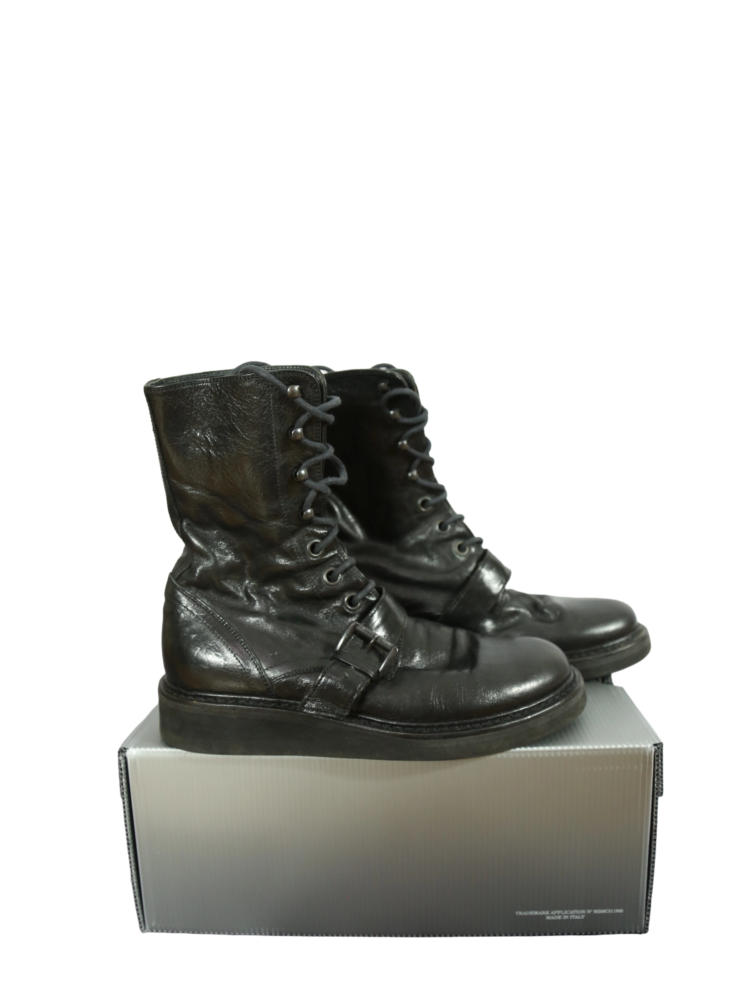

Ann Demeulemeester
350.00 €
Aus dem kuratierten Archiv von Disorder119. Diese Ann Demeulemeester Boots verkörpern die charakteristische Verbindung aus Funktionalität und reduzierter Dramatik, für die das Label seit Jahrzehnten steht. Die hohe Schnürsilhouette wird durch einen zusätzlichen Riemen mit Metallschließe akzentuiert und verleiht dem Schuh eine leicht militärische, zugleich avantgardistische Anmutung. Das schwarze Leder zeigt eine natürliche, gelebte Oberflächenstruktur mit subtiler Patina, die dem Modell Tiefe und Charakter verleiht. Die robuste Sohle sorgt für Standfestigkeit und Alltagstauglichkeit, während die schlanke Formgebung die klare Linienführung bewahrt. Ein zeitloses Paar, das sich mühelos in progressive wie auch minimalistische Looks integrieren lässt. Details: Marke Ann Demeulemeester Farbe Schwarz Größe 38 Passform Regulär Verschluss Schnürung mit Riemen und Metallschließe Material Leder
Im Archiv ansehen & in den Warenkorb →